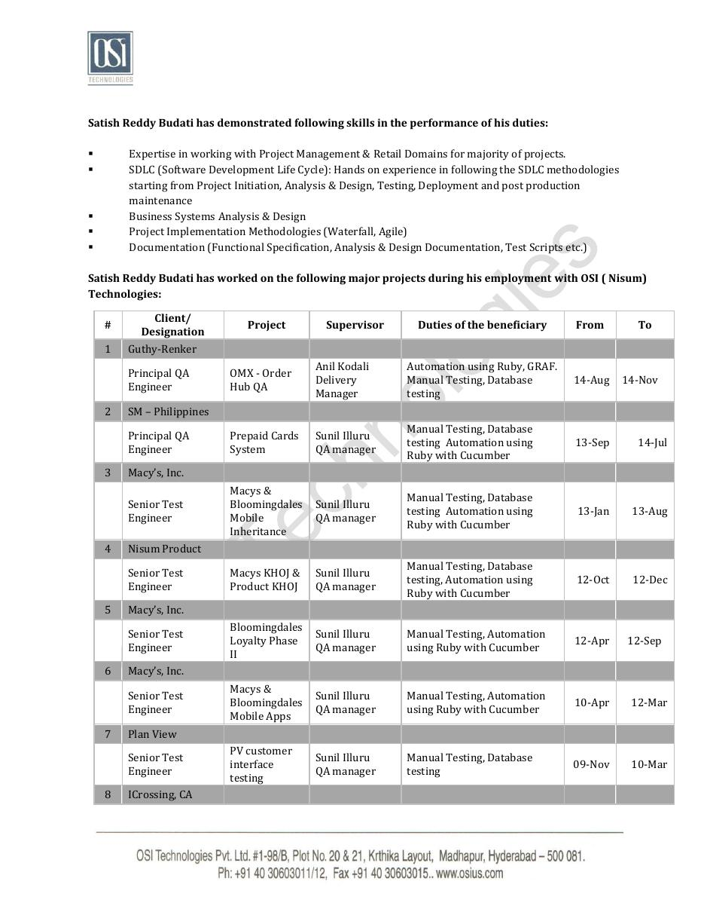
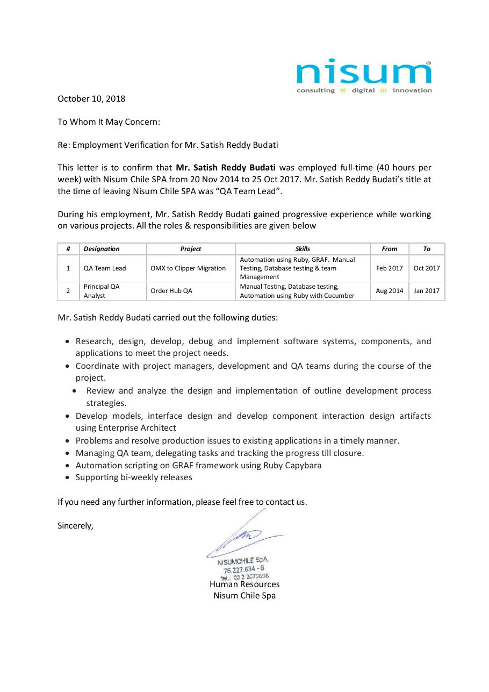
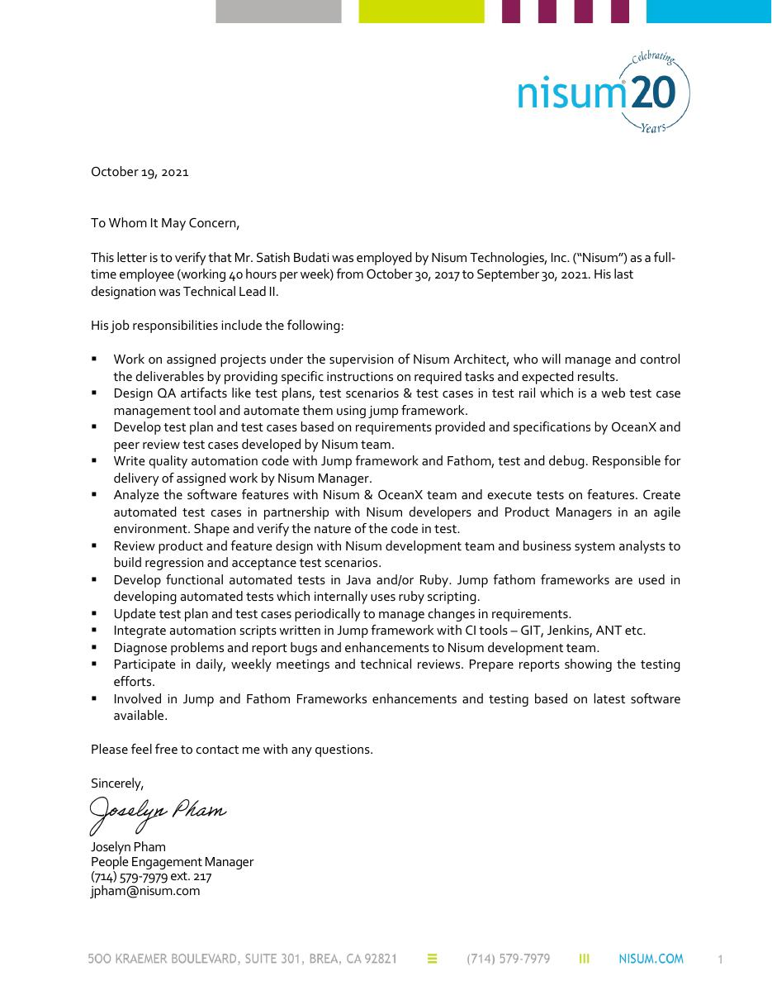
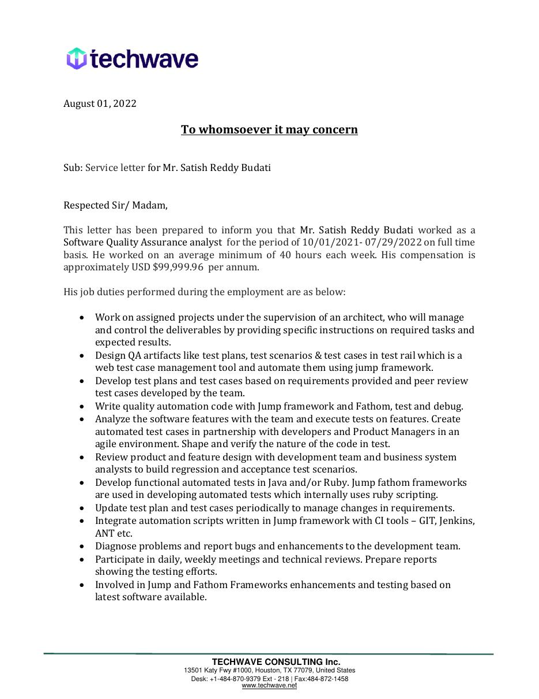
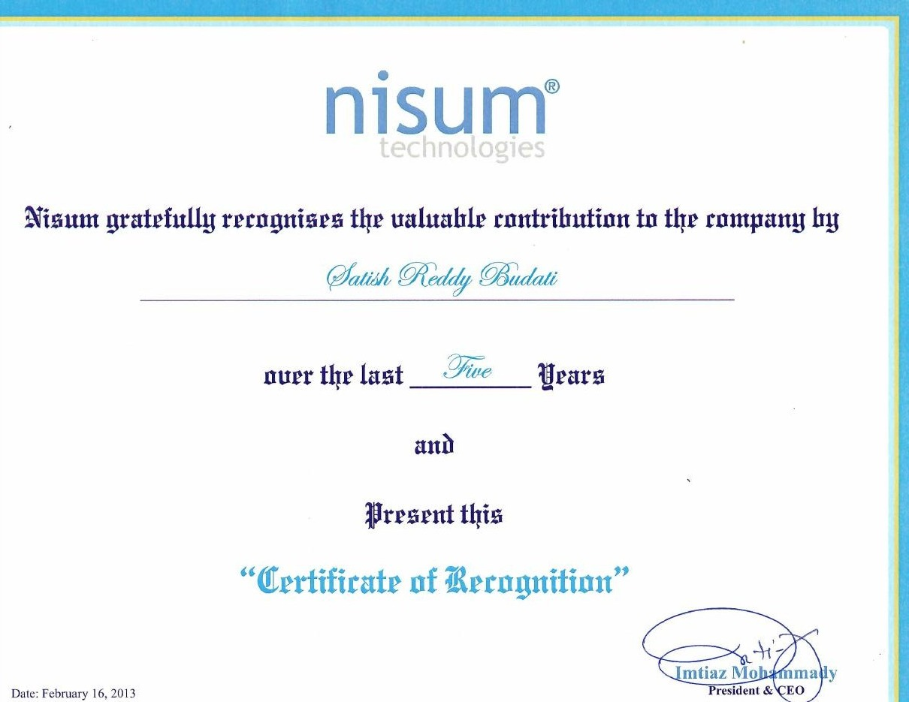

Quality engineering strategy, automation transformation, validation governance, and enterprise-scale delivery across retail, e-commerce, and supply-chain programs.
Translate business risk and system complexity into practical validation strategies, measurable quality indicators, and release-readiness decisions.
Establish reusable validation patterns, strengthen continuous testing, integrate automation into delivery pipelines, and improve engineering consistency and maintainability.
Coordinate engineers, product teams, business stakeholders, and partner organizations to resolve quality risk at system boundaries and support predictable delivery.
Each engagement took place during a period of significant business and technology change. The highlights below separate my engineering contribution from independently reported company progress and operating scale.
During this period, DIRECTV has been operating through a major enterprise transition. The developments below provide independently reported context for the business environment in which I lead supply-chain quality governance.
Quality engineering governance across order management, warehouse, inventory, transportation, fulfillment, and finance workstreams. My role centers on validation strategy, SIT/UAT governance, end-to-end integration quality, release readiness, risk management, and cross-system quality controls.
Enterprise context during my tenure. These are company-level developments reported publicly; they provide context for the scale and transformation environment in which my supply-chain quality governance work is performed.
TPG completed its acquisition of AT&T’s remaining 70% stake in DIRECTV. TPG said DIRECTV’s next-generation streaming service had grown to millions of subscribers and had significantly reduced churn.
Within this broader transformation environment, I lead quality governance for supply-chain workflows spanning OMS, WMS, inventory, transportation, fulfillment partners, and financial integrations—strengthening traceability, data integrity, release readiness, and risk visibility across system boundaries.
My OceanX work spanned two consulting engagements: through Nisum Technologies from Oct 2017–Sep 2021 and through Techwave from Oct 2021–Jul 2022. The developments below show publicly reported platform growth and operating scale during this period.
Led and contributed to automated acceptance and regression validation, reusable framework enhancement, CI integration, technical reviews, and cross-functional quality engineering with OceanX product and engineering teams.
My measurable engineering impact. Automation coverage increased from approximately 23% to 75%, while defect leakage decreased by approximately 18%. Public sources below independently illustrate the scale and integration complexity of OceanX operations during the same period.
A public announcement reported that OceanX integrated The Comfy’s Shopify store in two days and processed and shipped more than 16,000 orders in the first five days.
OSM Worldwide reported handling approximately 450,000 OceanX domestic packages per month beginning in September 2020, while OceanX publicly discussed the sharp pandemic-era increase in e-commerce demand.
Oracle’s OceanX case study describes a subscription-commerce platform combining e-commerce, fulfillment, customer care, business intelligence, and real-time customer-journey insight—illustrating the distributed environment supported by the automation and validation work.
Oracle case study ↗ · OceanX official site ↗ · Employer verification ↗
During my seven-year engagement, Macy’s progressed through major digital-commerce, inventory, mobile, and omnichannel initiatives. The developments below show independently reported progress during the same period in which I supported automation, integration, regression, database, and release validation.
Supported large-scale retail initiatives through requirements analysis, system integration and regression validation, client acceptance testing, database validation, and automated testing using Ruby and Cucumber.
Business progress during my engagement. These company-level results are not presented as outcomes attributable solely to my work. They show the transformation environment in which I contributed automation, regression, integration, database, mobile, and release validation.
Macy’s reported that RFID testing could maintain inventory accuracy at 97% or better, supporting more frequent item-level counts and improved merchandise availability.
By August 2014, nearly all Macy’s and Bloomingdale’s stores were fulfilling orders from other stores and/or online, and nearly all were supporting store pickup for online purchases.
Retail Dive’s archived Mobile Commerce Daily coverage named Macy’s the 2014 Mobile Retailer of the Year and reported a 383% increase in brand value between spring 2013 and 2014, alongside nationwide beacon expansion, Apple Pay adoption, image search, and broader mobile-commerce initiatives.
Retail Dive ↗ · Mobile & same-day delivery coverage ↗ · Employment & project verification ↗
OceanX describes its platform as a scalable 3PL environment spanning e-commerce fulfillment, order processing, inventory management, shipping, returns, and omnichannel operations. Its technology platform connects ERP, CRM, and e-commerce systems and automates workflows across the order-management lifecycle.
This public platform context illustrates the distributed integration environment in which the quality-engineering and automation work was performed.
Across nearly two decades, my responsibilities evolved from building automation and validating digital commerce platforms to leading distributed engineering teams, transforming enterprise quality practices, and advising complex cross-system transformation programs.
Employer-issued records document progression from hands-on automation and enterprise validation into team leadership, technical-lead responsibilities, framework enhancement, CI integration, and client-facing delivery.

Employer record documenting Macy’s and Bloomingdale’s projects, automation responsibilities, client reporting, and engineering progression.
View evidence ↗
Documents QA team management, task delegation, progress tracking, automation, cross-functional coordination, and release support.
View evidence ↗
Documents OceanX requirements and collaboration, automated testing, regression and acceptance validation, CI integration, and framework enhancement.
View evidence ↗
Provides continuity of automation, CI integration, technical reviews, and Jump/Fathom framework enhancement.
View evidence ↗My fourteen-year journey with Nisum spanned Hyderabad, Santiago, and California, representing a major part of my professional career. What began as hands-on quality engineering evolved into broader responsibilities across automation, enterprise validation, client delivery, team leadership, and technical consulting.
Quality engineering, automation, enterprise commerce, and large-scale retail delivery.
Client-facing delivery, QA team leadership, automation, cross-functional coordination, and release support.
Enterprise platforms, automation frameworks, CI integration, client collaboration, and Technical Lead II responsibilities.

An early milestone in a professional relationship that ultimately spanned approximately fourteen years across three countries.